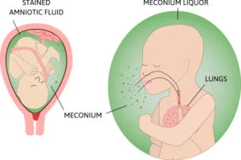
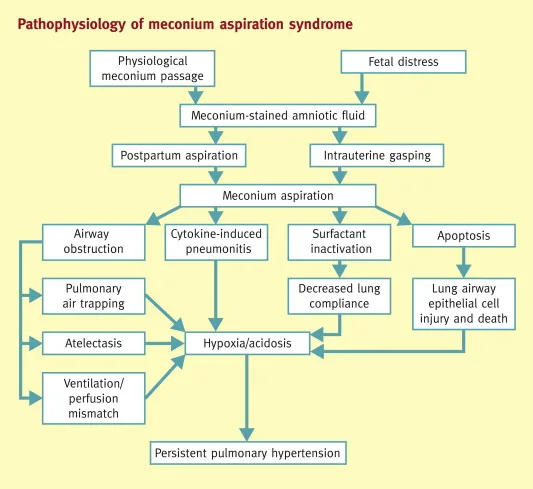
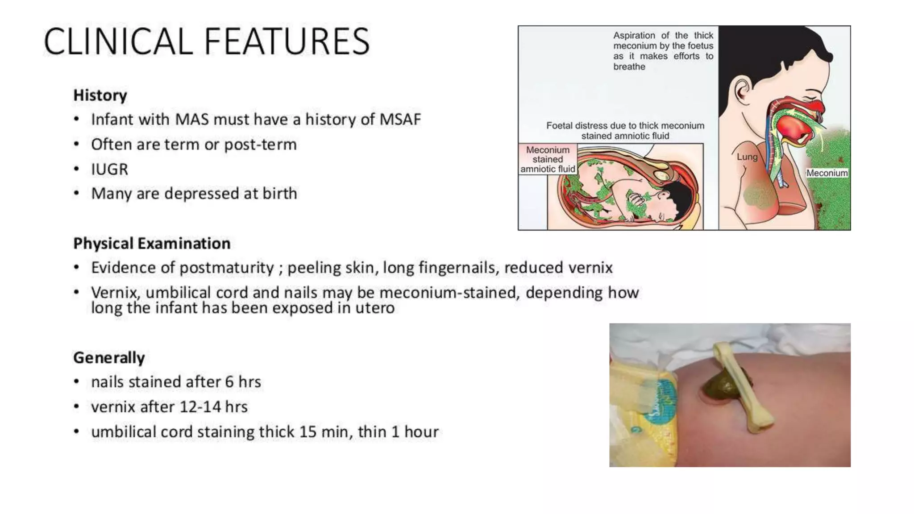

Expanded Nursing Uganda Explanation
Meconium Aspiration Syndrome should be understood beyond a short definition. Link the concept to patient history, focused assessment, common risks, nursing priorities, documentation and evaluation of outcomes.
01 Overview
Meconium Aspiration Syndrome (MAS) is a condition of respiratory distress in a newborn infant, typically born at or near term, caused by the aspiration of meconium-stained amniotic fluid into the tracheobronchial tree.
- Meconium: This refers to the newborn's first stool. It is a thick, sticky, dark green or black substance composed of intestinal epithelial cells, lanugo, mucus, amniotic fluid, bile, and water. Typically, meconium is passed after birth.
- Meconium-Stained Amniotic Fluid (MSAF): This occurs when the fetus passes meconium while still in the uterus, mixing with the amniotic fluid. This usually happens under conditions of fetal stress (e.g., hypoxia, infection).
- Aspiration: This is the inhalation of the MSAF into the lungs, either before, during, or immediately after birth.
- Respiratory Distress: The aspiration of meconium causes a chemical pneumonitis, airway obstruction, and inactivation of surfactant, leading to significant breathing difficulties in the newborn.
Therefore, MAS is a direct consequence of the physical obstruction and inflammatory reaction that occurs when meconium enters the lungs. It is distinct from simply having meconium-stained amniotic fluid; MAS refers to the respiratory illness that develops from the aspiration.
Meconium aspiration syndrome is troubled breathing (respiratory distress) in a newborn who has breathed (aspirated) a dark green, sterile fecal material called meconium into the lungs before or around the time of birth.
The incidence of MAS has seen a significant decline over recent decades, primarily due to improved obstetrical management, including earlier identification and intervention for fetal distress, and revised delivery room management guidelines.
- Meconium-Stained Amniotic Fluid (MSAF): MSAF occurs in approximately 10-15% of all live births . It is most common in term and post-term pregnancies and rare before 34 weeks' gestation.
- Development of MAS: Of the infants born through MSAF, only about 2-5% will develop clinically significant MAS.
- This means that while MSAF is relatively common, the actual development of MAS requiring medical intervention is much less frequent.
In utero, meconium passage results from neural stimulation of a maturing gastrointestinal (GI) tract, usually due to fetal hypoxic stress.
Normally, the fetus does not pass meconium until after birth. However, under conditions of fetal stress, the vagal nerve can be stimulated, leading to increased peristalsis and relaxation of the anal sphincter, resulting in the passage of meconium into the amniotic fluid.
Common stressors include:
- Hypoxia/Asphyxia: Reduced oxygen supply to the fetus.
- Placental Insufficiency: Impaired function of the placenta.
- Maternal Hypertension or Pre-eclampsia: Conditions affecting maternal blood flow.
- Maternal Infection: Systemic or intra-amniotic infections.
- Post-term Pregnancy: Fetus is more mature and susceptible to age-related placental changes.
Aspiration of MSAF can occur:
- In Utero: If the fetus experiences gasping movements or deep inspiratory efforts while still in the uterus, particularly during periods of fetal distress.
- During Birth: As the fetal chest is compressed during vaginal delivery, any MSAF in the upper airways can be expelled. Upon chest recoil after delivery, the infant may make vigorous inspiratory efforts, aspirating residual MSAF.
Once meconium enters the tracheobronchial tree, it causes a cascade of events leading to severe lung injury through four primary mechanisms:
- Airway Obstruction: Partial Obstruction (Ball-Valve Effect): Meconium, being thick and viscous, can partially obstruct small airways. During inspiration, air can pass beyond the obstruction into the alveoli, but during expiration, the airway narrows, trapping air within the alveoli. This leads to: Air Trapping: Over-distension of alveoli distal to the obstruction.
- Hyperinflation: Of affected lung segments.
- Pneumothorax/Pneumomediastinum: The trapped air can rupture over-distended alveoli, leading to air leaks into the pleural space or mediastinum, a serious complication.
- Complete Obstruction: In some cases, meconium can completely block smaller airways, leading to: Atelectasis: Collapse of the lung tissue distal to the obstruction, causing reduced gas exchange.
- Chemical Pneumonitis and Inflammation: Meconium is not sterile and contains bile salts, fatty acids, pancreatic enzymes, and inflammatory mediators. These components are highly irritating to the delicate lung tissue. Upon contact with the alveolar and bronchial epithelium, meconium induces a severe chemical pneumonitis (inflammation of the lung tissue).
- This inflammatory response leads to: Release of Cytokines and Chemokines: Attracting neutrophils and macrophages.
- Pulmonary Edema: Fluid accumulation in the interstitial and alveolar spaces.
- Hemorrhage: Damage to capillaries.
- Cellular Necrosis: Death of lung cells.
- This widespread inflammation further impairs gas exchange and increases lung stiffness.
- Surfactant Inactivation: Pulmonary surfactant is a lipoprotein complex that reduces surface tension in the alveoli, preventing their collapse at the end of expiration. Meconium components (e.g., free fatty acids, phospholipids, bile salts) directly inactivate surfactant .
- The inflammatory process also interferes with surfactant production and function.
- Loss of functional surfactant leads to: Alveolar Collapse (Atelectasis): Due to increased surface tension.
- Reduced Lung Compliance: Lungs become stiff and difficult to inflate.
- Increased Work of Breathing: As the infant struggles to keep alveoli open.
- Persistent Pulmonary Hypertension of the Newborn (PPHN): MAS is a significant cause of PPHN, a life-threatening condition where pulmonary vascular resistance remains abnormally high after birth. The mechanisms contributing to PPHN in MAS include: Hypoxia: Generalized hypoxia from severe lung disease causes pulmonary vasoconstriction.
- Acidosis: Also contributes to vasoconstriction.
- Direct Vascular Injury: Meconium components can directly damage pulmonary endothelial cells, leading to increased vascular tone and remodeling of the pulmonary arteries.
- Inflammatory Mediators: Contribute to abnormal regulation of pulmonary vascular tone.
- PPHN leads to right-to-left shunting of blood (e.g., through the foramen ovale and ductus arteriosus), bypassing the lungs and resulting in severe hypoxemia despite ventilation.
The primary prerequisite for MAS is the presence of meconium-stained amniotic fluid (MSAF) and subsequent aspiration. Factors that increase the likelihood of MSAF and fetal aspiration include:
- Post-term Pregnancy (Gestational Age > 40 weeks): This is the most significant risk factor. The incidence of MSAF increases with advancing gestational age, peaking at 42 weeks, as the fetal gastrointestinal tract matures and placental function may decline.
- Fetal Distress/Asphyxia: Any condition leading to fetal hypoxia (e.g., umbilical cord compression, placental insufficiency, maternal hypertension, maternal diabetes, pre-eclampsia) can stimulate fetal vagal nerve activity, causing increased gut peristalsis and relaxation of the anal sphincter, leading to meconium passage.
- Intrauterine Growth Restriction (IUGR): These fetuses are often under chronic stress, increasing the risk of meconium passage.
- Maternal Factors: Maternal Hypertension: Can lead to placental insufficiency.
- Maternal Diabetes: Can affect fetal well-being.
- Maternal Chorioamnionitis (Intra-amniotic Infection): Can induce fetal stress.
- Maternal Smoking/Drug Use: Can lead to placental problems and fetal hypoxia.
- Oligohydramnios (Low Amniotic Fluid Volume): If MSAF occurs in the presence of oligohydramnios, the meconium becomes more concentrated and viscous, potentially leading to more severe aspiration.
- Prolonged Labor/Difficult Labor: Increased risk of fetal stress during prolonged or complicated deliveries.
- Fetal Acidosis: A consequence of fetal distress, which further triggers meconium passage.
The signs and symptoms of MAS appear at or soon after birth and can range from mild to severe, depending on the extent of meconium aspiration and the resulting lung injury.
- Meconium-Stained Amniotic Fluid: The most obvious sign, ranging from thin, light green "pea soup" consistency to thick, dark green/black particulate meconium.
- Meconium Staining of Skin, Nails, Umbilical Cord: Visible green or yellowish discoloration.
- Depressed Infant at Birth: Often associated with non-vigorous infants (poor muscle tone, depressed respiratory effort, heart rate < 100 bpm), indicating significant fetal distress and deep aspiration.
- These infants may require immediate resuscitation.
- Respiratory Distress (can develop rapidly or gradually): Tachypnea: Rapid breathing rate (> 60 breaths/minute).
- Grunting: Short, low-pitched sounds during expiration as the infant tries to keep airways open.
- Nasal Flaring: Widening of the nostrils to decrease airway resistance.
- Retractions: Indrawing of the chest wall (subcostal, intercostal, suprasternal) as the infant struggles to breathe.
- Cyanosis: Bluish discoloration of the skin and mucous membranes, indicating hypoxemia, despite supplemental oxygen.
- Coarse Breath Sounds: Due to the presence of meconium and inflammation.
- Rhonchi: Suggestive of secretions in large airways.
- Wheezing: If bronchoconstriction is present.
- Decreased Air Entry: In areas of atelectasis or severe air trapping.
- Barrel Chest: May develop due to air trapping and hyperinflation.
- Hypoxemia: Low arterial oxygen levels.
- Hypercapnia: High arterial carbon dioxide levels (in more severe cases).
- Acidosis: Metabolic and/or respiratory acidosis.
- Hypotension: Due to myocardial dysfunction or severe PPHN.
- Signs of Persistent Pulmonary Hypertension (PPHN): Severe hypoxemia unresponsive to oxygen, differential cyanosis (if right-to-left shunting is occurring at the ductus arteriosus).
The diagnosis of MAS is primarily clinical, supported by imaging studies and laboratory findings. There is no single definitive test, but rather a constellation of findings.
- Clinical Presentation: Presence of Meconium-Stained Amniotic Fluid (MSAF) at birth: This is a prerequisite.
- Signs of Respiratory Distress: Typically appearing at or soon after birth (within 12-24 hours). This includes tachypnea, grunting, nasal flaring, retractions, and cyanosis.
- Exclusion of Other Causes of Respiratory Distress: While not a "criterion" in itself, confirming that other common causes of respiratory distress (e.g., prematurity-related respiratory distress syndrome, sepsis, transient tachypnea of the newborn) are less likely or absent helps solidify the MAS diagnosis.
- Chest Radiograph (X-ray): This is a cornerstone of MAS diagnosis and helps assess the extent and type of lung injury. Classic findings include: Patchy Infiltrates: Irregular, coarse, often diffuse infiltrates (areas of increased density) scattered throughout both lung fields. This represents atelectasis and inflammation.
- Hyperinflation: Areas of over-expanded lung due to air trapping (can manifest as flattened diaphragms and increased anteroposterior diameter).
- Increased Bronchovascular Markings: Prominent blood vessels and airways, indicating inflammation and fluid.
- Pleural Effusions: Less common, but can occur with severe inflammation.
- Evidence of Complications: May show air leaks such as pneumothorax (air in the pleural space) or pneumomediastinum (air in the mediastinum), which are common in MAS due to air trapping.
- Blood Gas Analysis (Arterial or Capillary): Reveals hypoxemia (low PaO2) and often hypercapnia (high PaCO2) and acidosis (low pH), reflecting impaired gas exchange.
- Severity of blood gas abnormalities correlates with the severity of lung disease.
- Echocardiogram (if PPHN is suspected): While not diagnostic for MAS itself, an echocardiogram is essential if the infant has severe hypoxemia unresponsive to oxygen, suggesting Persistent Pulmonary Hypertension of the Newborn (PPHN). It can confirm PPHN, assess its severity, and rule out structural heart disease.
It's important to consider other conditions that can cause respiratory distress in newborns, as their management differs significantly.
- Transient Tachypnea of the Newborn (TTN): Similarities: Presents with tachypnea, often within hours of birth.
- Differences: Usually affects term or late pre-term infants, often after C-section without labor. Chest X-ray shows prominent perihilar streaking, fluid in the fissures, and mild hyperinflation, resolving within 24-48 hours. Infants are typically less distressed and do not have meconium staining. Blood gases are usually mildly deranged.
- Neonatal Pneumonia/Sepsis: Similarities: Can cause respiratory distress, poor feeding, lethargy, and abnormal chest X-ray findings (infiltrates).
- Differences: Meconium staining is absent. Signs of systemic infection (fever/hypothermia, poor perfusion) are more prominent. Blood cultures and inflammatory markers (CRP, procalcitonin) would be elevated. It can be difficult to differentiate from MAS, and sometimes MAS can predispose to pneumonia.
- Respiratory Distress Syndrome (RDS): Similarities: Causes respiratory distress, hypoxemia.
- Differences: Primarily affects premature infants due to surfactant deficiency. Chest X-ray shows diffuse reticulogranular (ground glass) pattern and air bronchograms, often with low lung volumes. Meconium staining is absent.
- Congenital Heart Disease: Similarities: Can cause cyanosis, tachypnea, and respiratory distress.
- Differences: Usually no meconium staining. Characteristic heart murmurs may be present. Echocardiogram is diagnostic.
- Pneumothorax/Pneumomediastinum (Primary Air Leaks): Similarities: Can cause acute respiratory distress.
- Differences: Can occur spontaneously or secondary to other lung conditions (e.g., MAS, RDS). Chest X-ray is diagnostic. If isolated, meconium staining is absent.
- Diaphragmatic Hernia: Similarities: Severe respiratory distress, often cyanosis.
- Differences: Bowel sounds may be heard in the chest, and the abdomen may be scaphoid. Chest X-ray shows abdominal organs in the chest cavity, displacing the heart and mediastinum. Meconium staining is absent.
Effective management of MAS begins even before the baby is fully delivered, with specific guidelines for handling meconium-stained infants. The goal is to prevent aspiration or minimize its effects, and then to support respiratory function postnatally.
The management of meconium-stained amniotic fluid has evolved significantly. Current guidelines (e.g., NRP - Neonatal Resuscitation Program) emphasize assessment of the infant's vigor at birth.
- Vigorous is defined as having: Good muscle tone.
- Effective respiratory effort (crying or breathing well).
- Heart rate > 100 beats per minute.
- Intervention: No routine tracheal suctioning.
- The infant can stay with the mother for initial care (drying, warming, stimulation).
- Observe for any signs of respiratory distress. If respiratory distress develops, proceed to standard neonatal resuscitation steps (position airway, suction mouth/nose with bulb syringe if needed, provide positive pressure ventilation if indicated).
- Non-vigorous is defined as having: Poor muscle tone.
- Depressed or absent respiratory effort (apnea, gasping).
- Heart rate < 100 beats per minute.
- Intervention: Immediate transfer to a radiant warmer for initial steps of resuscitation.
- Do NOT routinely perform endotracheal suctioning.
- Proceed immediately to positive pressure ventilation (PPV) if the infant is apneic or gasping or has a heart rate < 100 bpm after drying and stimulation.
- If there is evidence of airway obstruction (e.g., poor chest rise despite effective PPV), then laryngoscopy and endotracheal suctioning may be considered to remove thick meconium. However, this is no longer a routine step for all non-vigorous infants with MSAF.
- Continue with standard NRP guidelines for resuscitation as needed (chest compressions, medications).
Once MAS is established, management is primarily supportive and aims to optimize respiratory function, prevent complications, and manage PPHN if present.
- Supplemental Oxygen: Administer warmed, humidified oxygen to maintain target SpO2 levels (typically 90-95%, adjust as per clinical status and PPHN presence).
- Continuous Positive Airway Pressure (CPAP): May be used for infants with mild to moderate respiratory distress to help keep alveoli open and improve oxygenation.
- Mechanical Ventilation: Indicated for severe respiratory distress, persistent hypoxemia, hypercapnia, or apnea.
- Ventilator Strategies: Gentle Ventilation: Use strategies to minimize barotrauma (injury from pressure) and volutrauma (injury from over-distension). This often involves: Lower peak inspiratory pressures (PIP).
- Adequate positive end-expiratory pressure (PEEP) to prevent alveolar collapse.
- Careful control of tidal volumes.
- Permissive Hypercapnia: Allowing slightly elevated PaCO2 (e.g., up to 55-60 mmHg) as long as pH is acceptable, to avoid aggressive ventilation.
- High-Frequency Oscillatory Ventilation (HFOV): May be used for severe MAS with persistent hypoxemia or PPHN when conventional ventilation fails, as it provides continuous lung recruitment and minimizes pressure fluctuations.
- Surfactant Therapy: Exogenous surfactant may be administered to infants with MAS, particularly those requiring mechanical ventilation. Meconium inactivates natural surfactant, so administering exogenous surfactant can improve lung compliance and oxygenation.
- Some protocols advocate for dilute surfactant lavage, though this is less common.
PPHN is a significant complication of severe MAS and requires specific management:
- Optimize Oxygenation and Ventilation: Addressing hypoxemia and acidosis.
- Inhaled Nitric Oxide (iNO): A potent pulmonary vasodilator that selectively acts on the pulmonary vasculature, improving pulmonary blood flow and gas exchange. It is a cornerstone therapy for PPHN associated with MAS.
- Systemic Vasopressors: To support systemic blood pressure if hypotension is present, ensuring adequate perfusion and countering the effects of pulmonary vasodilation.
- Extracorporeal Membrane Oxygenation (ECMO): Considered for severe MAS with refractory hypoxemia and PPHN that fails to respond to conventional and iNO therapy. ECMO provides temporary cardiac and respiratory support.
- Fluid and Electrolyte Management: Careful management to avoid fluid overload (which can worsen pulmonary edema) and maintain electrolyte balance.
- Nutritional Support: May require parenteral nutrition initially, transitioning to enteral feeds (NG/OG tube) as respiratory status improves and feeding tolerance is established.
- Antibiotics: Often initiated empirically due to the difficulty in distinguishing MAS from neonatal pneumonia, and the risk of secondary bacterial infection. Discontinued if cultures are negative.
- Sedation: May be required for ventilated infants to minimize agitation and ventilator dyssynchrony, especially if PPHN is present.
- Temperature Regulation: Maintain normothermia to minimize metabolic demands.
- Monitoring: Continuous monitoring of heart rate, respiratory rate, SpO2, blood pressure, urine output.
- Frequent blood gas analysis.
- Chest X-rays to monitor lung status and identify complications (e.g., air leaks).
- Air Leaks (Pneumothorax, Pneumomediastinum): Requires immediate intervention, often needle aspiration or chest tube insertion.
- Hypoglycemia/Hypocalcemia: Monitor and treat as needed.
- Seizures: Monitor for and treat if present, as they can be a sequela of perinatal asphyxia.
- Infants born with meconium aspiration syndrome should have routine neonatal care while monitoring for signs of distress according to the general neonatal resuscitation guidelines e.g. Suctioning to open up the airway
- Pediatrics no longer recommend routine endotracheal suctioning for non-vigorous infants with meconium aspiration syndrome, Chest tube insertion under water seal drainage to treat atelectasis and pneumothorax in vigorous infants.
- Newborns are admitted to the neonatal intensive care unit (NICU) if necessary.
- Oxygen therapy: Supplemental oxygen is often needed in meconium aspiration syndrome with goal oxygen saturation > 90% to prevent tissue hypoxia and improve oxygenation.
- Surfactant: The use of surfactant in meconium aspiration syndrome is not standard of care, however, as discussed above, surfactant inactivation has a role in the pathogenesis of meconium aspiration syndrome. Therefore surfactant may be helpful in some cases
- Cardiac exam: In patients with meconium aspiration syndrome (MAS), a thorough cardiac examination and echocardiography are necessary to evaluate for congenital heart disease and persistent pulmonary hypertension of the newborn (PPHN).
- Rooming-in: If the baby is vigorous (defined as having a normal respiratory effort and normal muscle tone), the baby may stay with the mother to receive the initial steps of newborn care; a bulb syringe can be used to gently clear secretions from the nose and mouth.
- Placing in a radiant warmer: If the baby is not vigorous (defined as having a depressed respiratory effort or poor muscle tone), place the baby on a radiant warmer, clear the secretions with a bulb syringe, and proceed with the normal steps of newborn resuscitation (ie, warming, repositioning the head, drying, and stimulating).
- Minimize handling: Minimal handling is essential because these infants are easily agitated; agitation can increase pulmonary hypertension and right-to-left shunting, leading to additional hypoxia and acidosis; sedation may be necessary to reduce agitation.
- Insertion of umbilical artery catheter: An umbilical artery catheter should be inserted to monitor blood pH and blood gases without agitating the infant.
- Respiratory care: Continue respiratory care includes oxygen therapy via hood or positive pressure, and it is crucial in maintaining adequate arterial oxygenation; mechanical ventilation is required by approximately 30% of infants with MAS; make concerted efforts to minimize the mean airway pressure and to use as short an inspiratory time as possible; oxygen saturation should be maintained at 90-95%.
- Surfactant therapy: Surfactant therapy is commonly used to replace displaced or inactivated surfactant and as a detergent to remove meconium; although surfactant use does not appear to affect mortality rates, it may reduce the severity of disease, progression to extracorporeal membrane oxygenation (ECMO) utilization, and decrease the length of hospital stay.
- IV fluids: Intravenous fluid therapy begins with adequate dextrose infusion to prevent hypoglycemia; intravenous fluids should be provided at mildly restricted rates (60-70 mL/kg/day).
- Diet: Progressively add electrolytes, protein, lipids, and vitamins to ensure adequate nutrition and to prevent deficiencies of essential amino acids and essential fatty acids.
- Antibiotics such as Ampicillin and Gentamicin to prevent or treat any infection
- Systemic vasoconstrictors: These agents are used to prevent right-to-left shunting by raising systemic pressure above pulmonary pressure; systemic vasoconstrictors include dopamine, dobutamine, and epinephrine; dopamine is the most commonly used.
- Pulmonary vasodilator: Inhaled nitric oxide is a pulmonary vasodilator that has a role in pulmonary hypertension and persistent pulmonary hypertension (PPHN)
- Neuromuscular blocking agents: These agents are used for skeletal muscle paralysis to maximize ventilation by improving oxygenation and ventilation; they are also used to reduce barotrauma and minimize oxygen consumption.
- Sedatives: These agents maximize the efficiency of mechanical ventilation, minimize oxygen consumption, and treat the discomfort of invasive therapies.
The complications of MAS arise directly from the primary injury to the lungs and the need for aggressive interventions.
- Respiratory Complications: Persistent Pulmonary Hypertension of the Newborn (PPHN): As discussed, this is a major complication, leading to severe hypoxemia and requiring intensive treatment. It significantly increases morbidity and mortality.
- Pulmonary Air Leaks: Pneumothorax: Air in the pleural space, collapsing the lung.
- Pneumomediastinum: Air in the mediastinum.
- Pneumopericardium: Air in the pericardial sac (rare but life-threatening).
- These result from air trapping and overdistension of alveoli, often exacerbated by positive pressure ventilation.
- Chronic Lung Disease (CLD)/Bronchopulmonary Dysplasia (BPD) (Less Common than in Premature Infants): While more typical in premature infants, severe MAS requiring prolonged mechanical ventilation and high oxygen concentrations can lead to lung inflammation and injury that may result in BPD, particularly if there was underlying lung immaturity.
- Recurrent Wheezing and Airway Hyperreactivity: Infants who had MAS may have an increased risk of developing asthma-like symptoms, recurrent wheezing, and reactive airway disease later in childhood due to the initial lung injury and inflammation.
- Pulmonary Infection: The inflamed and damaged lung tissue is more susceptible to bacterial infection, leading to pneumonia.
- Neurological Complications: Hypoxic-Ischemic Encephalopathy (HIE): This is a critical concern, as the underlying fetal distress and perinatal asphyxia that lead to meconium passage can also cause oxygen deprivation and damage to the brain. The severity of HIE can range from mild to severe, leading to: Seizures.
- Developmental Delay.
- Cerebral Palsy.
- Cognitive Impairment.
- Intraventricular Hemorrhage (IVH): Though more common in premature infants, severe asphyxia can increase the risk in term infants.
- Other Systemic Complications (often related to underlying asphyxia and systemic inflammation): Renal Failure: Acute tubular necrosis due to hypoperfusion.
- Cardiac Dysfunction: Myocardial ischemia and decreased contractility.
- Gastrointestinal Complications: Necrotizing enterocolitis (NEC) is rare in term infants but can occur with severe asphyxia and hypoperfusion.
- Hematologic Issues: Coagulopathy, thrombocytopenia.
- Multisystem Organ Dysfunction: In the most severe cases, leading to shock and death.
The prognosis for infants with MAS is highly variable and depends on several factors:
- Severity of MAS: Mild MAS: Most infants with mild MAS recover fully with supportive care and have an excellent long-term prognosis.
- Moderate MAS: May require more intensive respiratory support but generally recover well without significant long-term sequelae if complications like PPHN are successfully managed.
- Severe MAS: Associated with a higher risk of complications, including PPHN, air leaks, and HIE. These infants have a higher risk of mortality and long-term neurodevelopmental impairment.
- Presence and Severity of PPHN: PPHN significantly worsens the prognosis. Infants with severe, refractory PPHN have higher mortality rates and a greater risk of adverse neurodevelopmental outcomes due to persistent hypoxemia and the need for aggressive treatments.
- Presence and Severity of Hypoxic-Ischemic Encephalopathy (HIE): The severity of brain injury due to perinatal asphyxia is the most critical determinant of long-term neurodevelopmental outcome. Infants with severe HIE have the highest risk of death or significant neurodevelopmental disabilities.
- Timeliness and Effectiveness of Intervention: Prompt and appropriate resuscitation in the delivery room and effective postnatal management of respiratory distress and complications improve outcomes.
Nurses play a pivotal role in the continuous assessment, direct care, and advocacy for infants with MAS.
Based on the pathophysiology and clinical presentation of MAS, several nursing diagnoses are highly relevant:
- Impaired Gas Exchange related to meconium aspiration, airway obstruction, chemical pneumonitis, and surfactant inactivation. Defining Characteristics: Tachypnea, nasal flaring, grunting, retractions, cyanosis, hypoxemia, hypercapnia, abnormal blood gases.
- Ineffective Airway Clearance related to thick meconium in the airways, increased mucus production, and impaired cough reflex. Defining Characteristics: Adventitious breath sounds (rhonchi, rales), tachypnea, ineffective cough, presence of meconium in aspirates.
- Ineffective Breathing Pattern related to lung immaturity, fatigue, and increased work of breathing. Defining Characteristics: Tachypnea, bradypnea, dyspnea, use of accessory muscles, nasal flaring, retractions.
- Risk for Ineffective Tissue Perfusion: Cardiopulmonary related to persistent pulmonary hypertension, hypoxemia, and myocardial dysfunction. Defining Characteristics (Potential): Mottling, prolonged capillary refill time, decreased peripheral pulses, hypotension, severe hypoxemia refractory to oxygen.
- Risk for Infection related to compromised respiratory system, invasive procedures, and generalized inflammatory response. Defining Characteristics (Potential): Elevated white blood cell count, positive cultures, signs of sepsis.
- Risk for Inadequate protein energy intake related to increased insensible water loss, potential for renal dysfunction, and medical interventions (e.g., IV fluids, diuretics). Defining Characteristics (Potential): Abnormal urine output, electrolyte imbalances, edema or signs of dehydration.
- Maladaptive Family Coping related to acute, life-threatening illness of a newborn, unexpected events surrounding birth, and parental anxiety. Defining Characteristics: Expressed concerns, emotional distress, inability to make decisions, questioning care.
Nursing interventions are designed to address the identified diagnoses and support the infant's physiological and developmental needs.
- Intervention Detail/Rationale
- 1. Continuous Cardiorespiratory Monitoring Monitor heart rate, respiratory rate, SpO2, blood pressure. Note trends and report significant changes.
- 2. Airway Management Positioning: Maintain optimal head and body alignment to promote open airway and lung expansion. Suctioning: Gentle oropharyngeal and nasopharyngeal suctioning as needed (not routinely deep suctioning unless ordered). For intubated infants, endotracheal suctioning as per protocol, assessing for effectiveness and potential for desaturation.
- 3. Oxygen Therapy Administer warmed, humidified oxygen as prescribed, maintaining desired SpO2. Monitor oxygen flow and device function (nasal cannula, hood, CPAP, ventilator).
- 4. Ventilator Management (for intubated infants) Monitor ventilator settings and alarm limits. Assess for chest rise symmetry, breath sounds, and signs of air leaks. Ensure secure endotracheal tube placement; check and document placement at the lip/gum line. Administer sedatives/analgesics as ordered to promote ventilator synchrony and reduce oxygen consumption.
- 5. Surfactant Administration Assist with and monitor infant during surfactant administration (e.g., ensure proper positioning, monitor for reflux, desaturation, or bradycardia).
- 6. Assess for and Manage Air Leaks Observe for sudden worsening of respiratory distress, asymmetry of chest movement, or new air leak sounds. Prepare for and assist with chest tube insertion if indicated. Monitor chest tube drainage, patency, and dressing.
- Intervention Detail/Rationale
- 1. Monitor for PPHN Observe for sudden desaturations, labile SpO2, increasing oxygen requirements, and differential cyanosis.
- 2. Administer Medications Give pulmonary vasodilators (e.g., iNO) and vasoactive medications as prescribed, carefully monitoring blood pressure and response.
- 3. Assess Peripheral Perfusion Check capillary refill time, skin color, and temperature.
- Intervention Detail/Rationale
- 1. Accurate Intake and Output (I&O) Meticulously record all fluid intake (IV, oral, medications) and output (urine, stool, gastric aspirates).
- 2. Weight Monitoring Daily weights to assess fluid balance.
- 3. Monitor Laboratory Values Review electrolytes, glucose, renal function (BUN, creatinine).
- 4. Nutritional Support Initiate and maintain parenteral nutrition (PN) and/or enteral feeds (e.g., gavage feeds) as tolerated, monitoring for abdominal distension or feeding intolerance.
- Intervention Detail/Rationale
- 1. Strict Hand Hygiene Adhere to hand hygiene protocols.
- 2. Aseptic Technique Maintain strict aseptic technique for all invasive procedures (IV insertion, suctioning, catheter care).
- 3. Administer Antibiotics Give antibiotics as ordered, monitoring for effectiveness and side effects.
- 4. Monitor for Signs of Infection Observe for fever, hypothermia, lethargy, poor feeding, or increased respiratory distress.
- Intervention Detail/Rationale
- 1. Neurodevelopmental Monitoring Observe for signs of HIE (e.g., lethargy, hypotonia, seizures, abnormal reflexes).
02 Nursing Uganda Clinical Lens
Use Meconium Aspiration Syndrome as a practical nursing topic, not only a memorized definition. Prioritize airway, breathing, circulation, pain, asepsis, wound healing and early complication detection.
- What to understand first: define meconium aspiration syndrome, identify the normal or expected pattern, then explain what changes when the patient is unwell.
- Why it matters in care: the nurse must recognize risk early, explain findings clearly, document accurately and know when to escalate.
- How to revise it: connect each point to assessment, nursing diagnosis or care problem, intervention, rationale and evaluation.
03 Assessment Guide
- Vital signs, pain, bleeding, perfusion, level of consciousness and injury pattern.
- Wound appearance, drainage, odour, swelling, temperature and surrounding skin.
- Fluid balance, mobility, nutrition, surgical site risk and ordered investigations.
04 Nursing Priorities, Rationales and Outcomes
- Stabilize urgent problems first, then prepare for investigations or theatre care.
- Maintain aseptic technique, pain control, wound care and documentation.
- Prevent shock, infection, pressure injury, deep vein thrombosis and delayed healing.
The rationale for these priorities is patient safety: nursing actions should prevent deterioration, reduce discomfort, support recovery and create clear evidence for the next caregiver.
- Expected outcome: The patient remains stable, wound healing progresses, pain is controlled and complications are recognized early.
05 Patient Teaching and Revision Check
- Explain meconium aspiration syndrome in simple language the patient or caregiver can repeat back.
- Teach warning signs, medicine or follow-up instructions, hygiene or lifestyle points where relevant.
- For exams, prepare a short answer using: definition, causes or risk factors, signs, assessment, management, complications and prevention.
- For ward practice, document baseline findings, actions taken, patient response and the plan for review.
Illustrations and Diagrams (7)





Related Video Lectures
Watch nursing lecture videos on YouTube for this topic. Opens in a new tab.
Watch on YouTubeExternal link: YouTube may use its own cookies and terms. Nursing Uganda is not affiliated with YouTube.